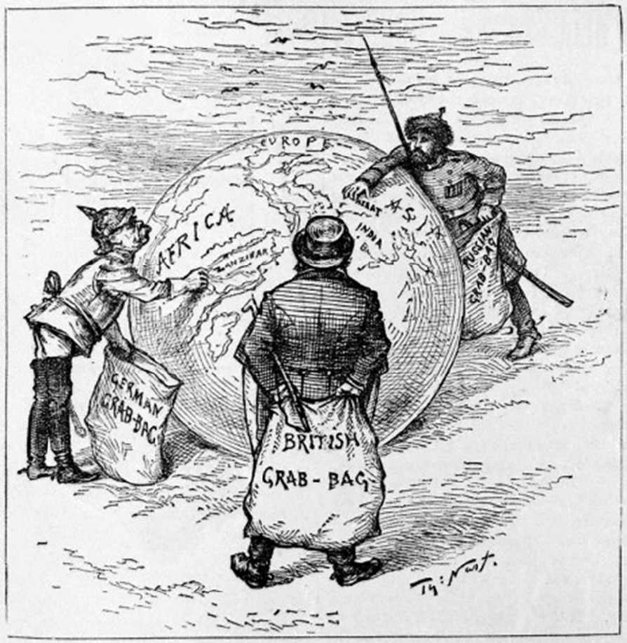
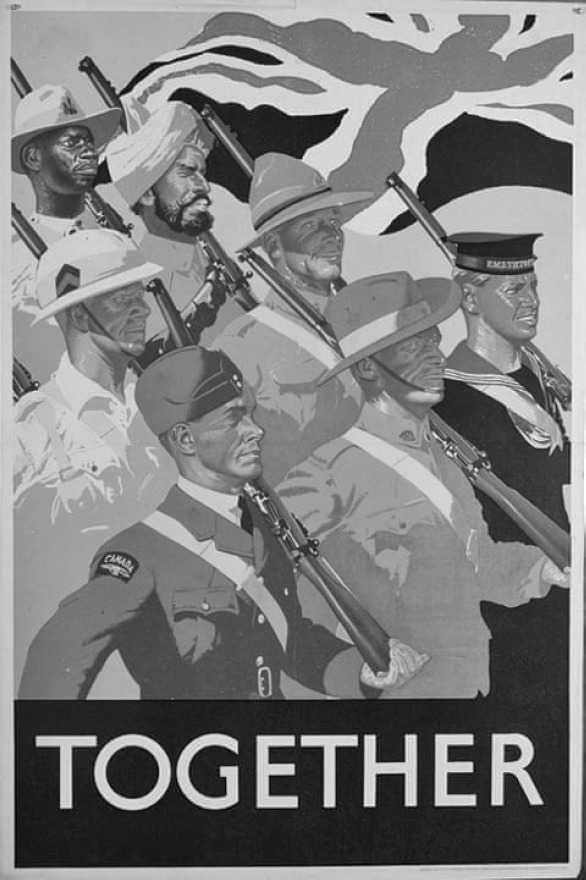
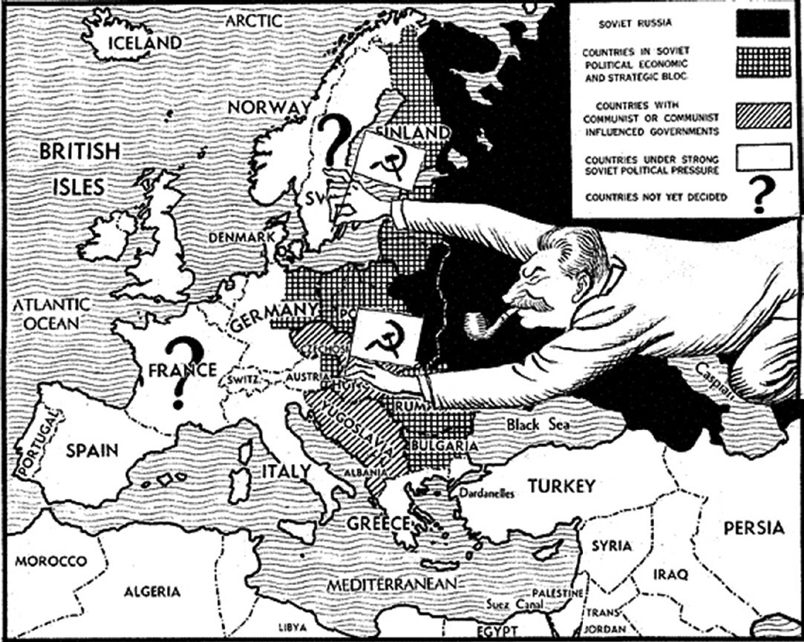

Chapter 18
Practice Multiple-Choice Questions
Practice with the following AP ®-style questions. Then go online to access our timed, full-length practice exam at www.rea.com/studycenter.
Use the excerpt below and your knowledge of world history to answer questions 1–3.
The Mongols persisted in their goal of conquering the whole world as if they were one man but they are millions in number. They attack suddenly, and make such horrible slaughters that the king cannot find enough people to wage battle against them. They fight constantly with javelins, bows and arrows, battle axes, maces, and swords. They trick all people and princes in time of peace, pretending to want to help but really to learn weaknesses and to find enough fertile ground to feed their huge multitudes. In this way they have deceived foolish rulers who granted the Mongols passage through their territories, which resulted in the ruin and destruction of the rulers and their lands.
From a 16th century English translation
of a 13th century Russian description
of Mongol characteristics
1. Modern historians would most likely consider this description of the Mongols to be
(A)accurate because the translation was written during the era of Mongol conquests
(B)balanced because the original author considered the Mongol point of view based on primary documents
(C)questionable because the original author was from Russia, a region conquered by Mongols
(D)inaccurate because the Mongol written language was not translated by Western scholars until the 20th century
2.The Mongol empire compared to other empires in history in what way?
(A)It was the largest land empire of all time.
(B)It was about the size of the Holy Roman Empire.
(C)It lasted almost as long as the Ottoman Empire.
(D)It used its naval military forces to create a Pacific Ocean empire.
3.According to most modern historians, in which of the following ways were the Mongols indirectly responsible for the spread of the pandemic plague in the 14th century?
(A)Mongols released plague-infected rats into cities to weaken them.
(B)Mongol intermarriage with local conquered people led to the spread of sexually transmitted diseases.
(C)The decline of Mongol influence in the 14th century resulted in inadequate medical care in Eurasia.
(D)Extensive trade routes protected by Mongols led to increased exchange of goods, technology, and disease.
Use the excerpt below and your knowledge of world history to answer questions 4–6.
We live in an age of Enlightenment. The motto of the Enlightenment should be, “Have courage to use your own understanding!” A prince should allow his people complete freedom of religion, and if he does, he should be praised by all. Rulers should also favor freedom in the arts and sciences and allow his subjects to create better ways to draw up laws. Once men are free to think for themselves, they will increasingly be able to act freely. Eventually, even the principles of government will benefit by treating people with dignity.
Immanuel Kant, German political philosopher, late 18th century
4.Which of the following was NOT a result of Enlightenment thought as described by Kant?
(A)The Reformation
(B)The American and French revolutions
(C)The development of constitutional governments
(D)The rise of nationalism, beginning in Europe
5.Enlightenment reforms included the abolition movement, which is best described as a political and social campaign to
(A)clean up pollution from the Industrial Revolution
(B)expand women’s rights, including the right to vote
(C)end slavery, beginning in European colonies
(D)reform prisons and mental institutions
6.The most direct result of Enlightenment philosophy in the 20th century was which of the following?
(A)Globalization of culture in media, such as “Bollywood” movies
(B)Decolonization movements, especially in Asia and Africa
(C)The rise of fascism as a form of government
(D)The rise of fundamentalism in some religions
Use the excerpt below and your knowledge of world history to answer questions 7–9.
Another of their good qualities is their habit of wearing clean white garments on Fridays. Even if a man has nothing but an old worn shirt, he washes it and cleans it, and wears it to the Friday service. Yet another is their zeal for learning the Quran by heart. They put their children in chains if they show any backwardness in memorizing it, and they are not set free until they have it by heart.
Among their bad qualities are the following. Women go into the sultan’s presence naked and without coverings, and his daughters also go about naked. Then there is their custom of putting dust and ashes on their heads, as a mark of respect, and other grotesque ceremonies. Another disgusting practice among many of them is the eating of dogs.
Ibn Battuta, 14th century Muslim traveler commenting on his visit to West Africa
7.Ibn Battuta describes a culture that blends traditions from different belief systems. World historians call this and the similar blending of traditions which of the following?
(A)Syncretism
(B)Global migration
(C)Nationalism
(D)Theocracy
8.West Africa saw a blending of Islamic teachings with local traditional beliefs. Which of the following is the clearest example of another such religious blending?
(A)Theravada Buddhism in India
(B)Judaism in Southwest Asia
(C)Catholicism in Latin America
(D)Daoism in Eastern Europe
9.What factor best explains why a Muslim from Spain or the Ottoman Empire could travel to and move about freely in West Africa in the 14th century?
(A)Under European imperialism, travelers were granted freedom of religion in Africa.
(B)West African governments had official political alliances with Spain and the Ottoman Empire.
(C)West African governments paid for large numbers of Muslim immigrants to populate their nations.
(D)Muslims from those regions shared a common religious faith with most people in West Africa.
Use the following document to answer questions 10–13.
“The bourgeoisie, wherever it has got the upper hand, has put an end to all feudal, patriarchal, idyllic relations. . . . It has resolved personal worth into exchange value, and in place of the numberless indefeasible chartered freedoms, has set up that single, unconscionable freedom—Free Trade. In one word, for exploitation, veiled by religious and political illusions, it has substituted naked, shameless, direct, brutal exploitation....The bourgeoisie . . . has converted the physician, the lawyer, the priest, the poet, the man of science, into its paid wage laborers. . . . The bourgeoisie has torn away from the family its sentimental veil, and has reduced the family relation to a mere money relation.”
Karl Marx, The Communist Manifesto, 1848
10.What major historical development most likely triggered Marx’s comments in this document?
(A)The development of feudalism in western Europe
(B)The rise of mercantilism by some western European states
(C)The expansion of the Industrial Revolution
(D)The effects of Russia’s communist revolution
11.What changes to society and culture occurred in areas where the development referred to in the document was most pronounced in the mid-19th century?
(A)Birthrates had declined compared to the late 18th century
(B)Poor families began moving to the countryside to escape overcrowded cities
(C)Working conditions in factories significantly improved
(D)Legal labor unions successfully lobbied governments for minimum wage laws
12.By the mid-20th century, Marx’s ideas had led to which of these developments?
(A)An increase in the number of government-funded social welfare programs in Western democracies
(B)A rise in the number of communist states
(C)The beginnings of a global Cold War
(D)All of these are true
13.By the end of the 20th century, what was the apparent outcome of Marx’s ideas?
(A)They continued to strengthen as a global political and economic system
(B)They were holding steady as a global political and economic system, with no expansion or loss
(C)They were largely on the decline as a political and economic system
(D)They had been discredited and completely disappeared as a political and economic system.
Use the document below to answer questions 14–16.
1.No Japanese ships are allowed to leave for foreign countries
2.Any Japanese person must be executed for secretly trying to leave the country. Europeans who enter Japan illegally face the death penalty.
4.Any place that practices Christianity must be thoroughly investigated.
7.Any Westerners who spread Christianity may be jailed, as was done in the past.
10.Samurai are not allowed to purchase any goods from foreign ships directly from Chinese merchants in Nagasaki.
The Sakoku Edict of 1635, by Japan’s Tokugawa Shogunate, addressed to officials in the city of Nagasaki
14.The laws above were written in response to which of these global processes?
(A)The Industrial Revolution
(B)The Columbian Exchange
(C)Implementation of Social Darwinist theories
(D)The “White Man’s Burden”
15.The Sakoku Edict is a response to this 17th century European economic theory that encouraged rulers and merchants to develop colonies that provided raw materials for global markets:
(A)Mercantilism
(B)Capitalism
(C)Socialism
(D)Nationalism
16.In the mid-19th century, Western nations forced the Tokugawa Shogunate to end Japan’s isolationism.
What was the name of the process that transformed Japan’s political, social and economic policies?
(A)The Bakufu
(B)The Greater East Asia Co-Prosperity Sphere
(C)The Meiji Restoration
(D)The Samurai
Use the image below and your knowledge of world history to answer questions 17–19.

The Library of Congress
1885 newspaper cartoon by American Thomas Nast titled, “The World’s Plunderers. Germany, Britain, and Russia grab what they can of Africa and Asia.” The left figure holds a sack that reads “German Grab-Bag”; the middle figure, “British Grab-Bag”; the right figure, “Russian Grab-Bag.”
17.The cartoon above reflects what 19th century global process?
(A)The causes of the Opium Wars
(B)European imperialism
(C)The Industrial Revolution
(D)The rise of Marxism
18.Which of these was a principal factor that led to the 19th century global process depicted in the cartoon?
(A)Trade agreements between Germany, Britain, and Russia
(B)Military alliances with Germany, Britain, and Russia on one side, and Africa and Asia on the other
(C)The development of new transportation and medical technologies
(D)African and Asian demands for products from Europe
19.The region that was the primary focus and recipient of European imperialism in the 19th century was:
(A)The Americas
(B)Australia and New Zealand
(C)Southeast Asia
(D)Africa
Use the image below to answer questions 20–22.

Source: “Second World War British Propaganda Posters—in Pictures,” The Guardian, Nov. 3, 2014.
20.This World War II poster, printed and distributed by the British government, promotes which of these concepts?
(A)The extent of democracy throughout the British empire during World War II.
(B)The patriarchal nature of the empire at the start of World War II.
(C)The success of Britain’s appeasement policy before World War II.
(D)The global extent of the empire during World War II.
21.An opponent of the message portrayed in this poster would most likely be:
(A)A Kenyan nationalist seeking self-rule
(B)An Australian citizen who felt unthreatened by war
(C)A British suffragette seeking equality
(D)A Canadian citizen who was conscripted into the military
22.In the years after World War II, what was the status of the British empire?
(A)It immediately collapsed as soon as the war ended in 1945.
(B)It steadily declined in size over the next 25 years.
(C)It maintained its status as the largest empire in the world.
(D)It sold its colonial holdings to rising powers such as the United States and Soviet Union.
Use the image below and your knowledge of world history to answer questions 23–25.

Cartoon by Illingworth, British “Daily Mail” newspaper, 1947
23.The cartoon above is best understood in the context of
(A)the Russian-German Non-Aggression pact during World War II
(B)free trade agreements between Eastern and Western Europe in the mid-20th century
(C)the growing popularity of Eastern European artistic styles in the post–World War II era
(D)Western European concerns about Soviet intentions after World War II
24.What was the most significant response to the focus of this cartoon by the U.S. and many Western European nations?
(A)They formed the European Coal and Steel Community and NAFTA.
(B)They formed NATO (the North Atlantic Treaty Organization).
(C)They encouraged Eastern European artists to sell their works to the West.
(D)They built a wall to separate East Germany from West Germany.
25.In which conflict did the United Nations authorize and commit troops to oppose forces supported by communist countries?
(A)Vietnam in the 1950s and 1960s
(B)Israel in the 1960s
(C)Korea in the 1950s
(D)Iraq in the 1990s
ANSWERS AND EXPLANATIONS
1.(C) The original Russian author’s point of view was likely swayed in his opinions about the Mongols by stories of their conquest of his land. The translation to English (A) was written centuries after Mongol conquests. There is no evidence the original author was granted access by the Mongols to their documents (B). Contrary to the assertion in Choice (D), the Mongol written language was known to Westerners at least by Marco Polo’s time (early 14th century).
2.(A) The Mongol empire was much larger than the Holy Roman Empire (B). It lasted about 200 years, while the Ottoman Empire lasted about 700 years (C). The Mongols failed in their attempts to invade Japan by sea, ending any thoughts of expansion further into the Pacific (D).
3.(D) Trade increased during the Age of the Mongols, and with trade came diseases, most notably the Black Death, which struck from China all the way to Europe because of trade routes. There is no historical basis for Choices (A) or (B). In addition, at no time in the 14th century was the medical community equipped to deal with the Black Death (C).
4.(A) The Reformation preceded the Enlightenment.
5.(C) The movement to end slavery was implemented in European colonies and spread to nations in the Americas. The other choices can be considered Enlightenment-inspired reforms, but none is abolitionism.
6.(B) Decolonization movements of the 20th century were sparked by nationalist fervor derived from Enlightenment concepts that had inspired nationalist movements in the 19th century. “Bollywood” movies were more a result of technology and the spread of American Hollywood movies (A). Fascism was highly nationalist politically, but its ideals were far removed from Enlightenment philosophy (C). The movement to restore some faiths to their basic teachings (D) was in some sense a response to some cultural outcomes of the Enlightenment, but not as directly as decolonization.
7.(A) World historians call this and similar blending of tradition syncretism. Global migration involves the moving of people, but not necessarily the blending of their cultures (B). Nationalism is pride in one’s country and/or cultural heritage (C). Theocracy is government run under religious guidelines (D).
8.(C) Catholicism in Latin America strongly featured syncretism with indigenous beliefs. Mahayana Buddhism was more syncretic than Theravada Buddhism (A). Once established, Judaism incorporated little from nearby religions (B), especially compared to Catholicism in Latin America. Daoism is part of Chinese culture, not Russian (D).
9.(D) Choice (A) is incorrect because the era of European imperialism in Africa was the 19th century. Choice (B) is incorrect because such alliances did not exist with Spain at that time. And Choice (C) is incorrect because no such government programs existed on a large scale.
10.(C) Feudalism developed in western Europe centuries before 1848 (A) Mercantilism of the 16th–18th centuries had faded by the mid-19th century in western Europe in favor of free trade (B) Russia’s communist revolution occurred in the early 20th century.
11.(A) For (B), (C), and (D), the opposite is true.
12.(D) (A) social welfare programs like British National Health System and Social Security in the U.S. (B)—communist revolutions in Russia, China by the mid-20th century (C). The Cold War began approximately one year after the end of World War II in 1946.
13.(C) (A) and (B) are not historically accurate. Communism fell in Eastern Europe, including Russia in the late 20th century. Communist China began implementing some capitalist reforms at the same time. (D) is not accurate because nations such as Cuba and North Korea remained firmly communist at the end of the 20th century.
14.(B) The Columbian exchange began as a trans-Atlantic process in the late 15th century and spread to the Indian Ocean region and East Asia soon after. The Industrial Revolution reached Japan in the 19th century (A), as did Social Darwinism (C) and the concept of the “White Man’s Burden” (D).
15.(A) Capitalism encourages free trade; mercantilism encourages protectionism (B). Socialism developed in the 19th century (C). Nationalism is a sense of pride of one’s ethnicity, language and culture (D).
16.(C) The Bakufu was the government in Japan headed by a shogun (A). The Greater East Asia C-Prosperity Sphere was an imperial Japanese policy from 1930–1945 (B). The Samurai were the warrior class that had significant power until the Meiji government (D).
17.(B) The Opium Wars focused on a trade dispute between China and Britain (A). The Industrial Revolution and the rise of Marxism are not the focus of the cartoon (C, D).
18.(C) Steamboats, trains, and improved medicines made the “new” imperialism of the 19th century into previously uncolonized regions possible. The cartoon does not refer to trade agreements (A) or military alliances (B). The opposite was true for Choice (D).
19.(D) The Americas were initially colonized by Europeans beginning in the late 15th century (A). Australia and New Zealand were colonized by Europeans largely in the 18th century (B). Southeast Asia did see European colonization in the 19th century but not to the extent of Africa (C).
20.(D) Democracy was not practiced throughout the British empire (A). Patriarchy is not a focus of this war poster (B). Britain’s appeasement policy was not a success (C).
21.(A) There was a large nationalist-based independence movement in Kenya in the mid-20th century. Some nationalists there opposed assisting the British in World War II. Australians were under a real threat of Japanese invasion (B). Choices (C) and (D) represent people who would be more likely to put aside their differences with British empire policies during World War II than someone from an African or Asian colony.
22.(B) beginning with the independence of India and its partition in 1949 through the hand-over of Hong Kong in 1997. The other choices are historically inaccurate.
23.(D) The Russian-German Non-Aggression pact was agreed to in 1941 (A). Free trade agreements did not exist during the Cold War (B). The cartoon has nothing to do with admiration of artistic styles (C).
24.(B) Choice (A) is incorrect because the European Coal and Steel Community was a free-trade agreement between some Western European nations, and NAFTA was a trade agreement between the U.S., Canada, and Mexico in the 1990s. Choice (C) has no basis in fact. Choice (D) alludes to the Berlin Wall, a barrier erected by the Soviet-backed East German government in 1961 to separate East Berlin from West Berlin.
25.(C) The United Nations did not authorize the use of its troops in Vietnam (A) or Israel (B). The UN use of force in Iraq was not against communism (D).